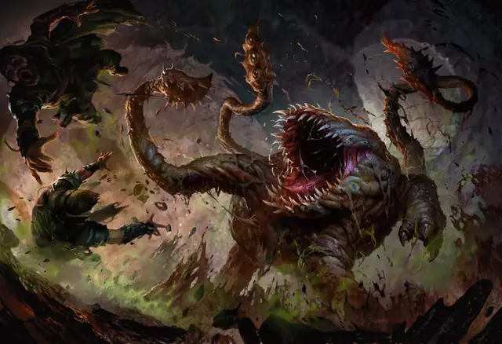

Отъяг
Otyugh
Большая Аберрация, Нейтральная

Класс Защиты 14 Инициатива +0 (10)
Хиты 104 (11к10 + 44)
Скорость 30 футов
| мод | спас | ||
|---|---|---|---|
| СИЛ | 16 | +3 | +3 |
| ЛОВ | 11 | +0 | +0 |
| ТЕЛ | 19 | +4 | +7 |
| мод | спас | ||
|---|---|---|---|
| ИНТ | 6 | −2 | −2 |
| МДР | 13 | +1 | +1 |
| ХАР | 6 | −2 | −2 |
Чувства Тёмное зрение 120 футов, пассивное Восприятие 11
Языки Отьягский, Телепатия 120 фт. (не даёт контактируемому существу отвечать телепатически)
Опасность 5 (1 800 опыта; БВ +3)
Действия
Мультиатака. Отъяг совершает одну атаку Укусом и две атаки Щупальцем.
Укус. Бросок рукопашной атаки: +6, досягаемость 5 фт. Попадание: 12 (2к8 + 3) Колющего урона, и цель становится Отравленной. Каждый раз, когда Отравленная цель завершает Долгий отдых, она подвергается следующему эффекту. Спасбросок Телосложения: Сл 15. Провал: Максимум Хитов цели снижается на 5 (1к10) и не возвращается к нормальному значению, пока на цели не будет окончено состояние Отравленный. Успех: Состояние Отравленный оканчивается.
Щупальце. Бросок рукопашной атаки: +6, досягаемость 10 фт. Попадание: 12 (2к8 + 3) Колющего урона. Если цель Среднего размера или меньше, она получает состояние Схваченный (Сл освобождения от захвата 13) от одного из двух щупалец.
Встряска щупальцами. Спасбросок Телосложения: Сл 14, каждое Схваченное отъягом существо. Провал: 16 (3к8 + 3) Дробящего урона, и цель получает состояние Ошеломлённый до начала следующего хода отъяга. Успех: Только половина урона.
Бонус мастерства +3
Среда обитания Подземье
Сокровища Любые
Отъяг
Прожорливые гурманы мусорных куч
Отъяги живут, чтобы есть — и чем отвратительнее трапеза, тем лучше. Любое иное существо, оказавшееся в пределах досягаемости, они считают очередным блюдом на бесконечном празднике жизни. На свалках, в сточных канавах, загрязнённых руинах и мрачных глубинах отъяги пожирают отбросы, падаль и всё, что их щупальца способны запихнуть в безразмерную пасть. Некоторые существа задабривают отъягов мусором, делая их бдительными — пусть и омерзительными — сторожами.
Часто отъяги зарываются в мусорные кучи и наблюдают за происходящим с помощью стебелька, усеянного глазами. Блёстким хламом и телепатическими призывами они подманивают добычу поближе, а затем вырываются из укрытия и атакуют шипастыми щупальцами и грязной пастью. Совершите бросок по таблице «Приманки отъягов» или определите сами способ отъяга завлекать жертв.
Приманки отъягов
| к4 | Чтобы привлечь потенциальный обед, отъяг… |
| 1 | Маскирует свои щупальца под мусорные куклы. |
| 2 | Распевает завлекательную песню на отъягском языке. |
| 3 | Телепатически передаёт послание по типу: «Тут вкусное-радостное!» или «Помоги! Я слишком аппетитный?» |
| 4 | Телепатически проецирует образ крупного самоцвета, погнутого оружия или раскисшего пирожного. |